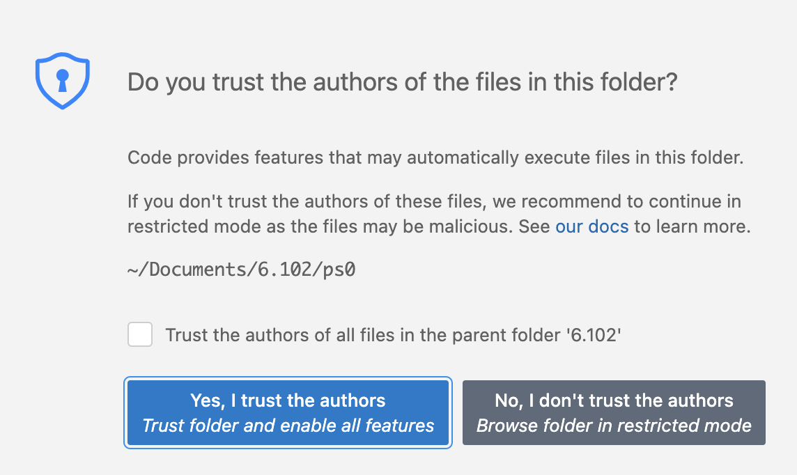
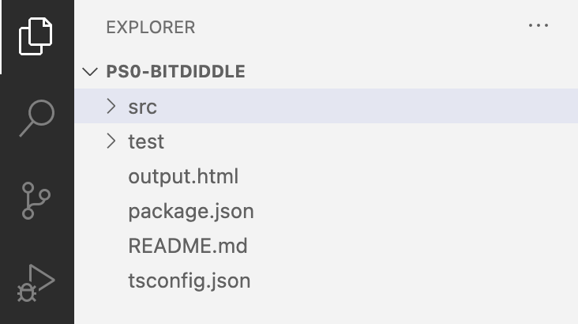

习题 0：海龟图形
本次习题的截止日期请见 课程日历。
| 免受 bug 困扰 | 易于理解 | 便于修改 |
|---|---|---|
| 今天正确，在未来未知的条件下也正确。 | 与未来的程序员清晰地沟通，包括未来的你自己。 | 设计时考虑到能够适应变化而无需重写。 |
- 介绍我们在 6.102 中将要使用的工具，包括 TypeScript、VS Code、Mocha 和 Git；
- 介绍 6.102 习题的工作流程；
- 以及练习 TypeScript 并开始使用标准库中的工具。
在本次习题中，你应该专注于编写免受 bug 困扰且易于理解的代码，运用我们在课堂上讨论的技术。
安装
你应该已经阅读并完成了入门指南，以安装你所需的软件。
Git 入门
阅读并完成 Git 1：版本控制 中的练习。
克隆
创建你的远程仓库，访问 didit.mit.edu/6.102/sp26 获取习题的起始代码。 进入
psets/ps0并点击按钮来创建你的仓库。 只有在课程注册表单被处理完毕、且习题公布之后（即第一次课之后），你才能创建仓库。如果在 ps0 公布后你仍无法创建仓库，说明你尚未注册 6.102。 请联系工作人员（该问谁？）来确认你的状态。
打开终端（Windows 上是 Git Bash），然后使用
cd进入你想要存放代码的目录。 例如，可能是你主目录下名为6.102的目录。如果你不熟悉命令行操作，Basic Git 介绍了
cd和mkdir等关键命令。克隆你的仓库。 你将通过 SSH 从你的笔记本电脑访问远程仓库。
注意：入门指南 中有你在使用 Git 之前必须完成的设置。
在 Didit 的
psets/ps0页面顶部找到你的git clone命令。 它是一条类似这样的长命令：git clone ... git@github.mit.edu:6102-sp26/ps0-«username».git
复制整条命令，粘贴到你的终端中并运行。 运行结果应该是一个名为
ps0-«username»的目录，里面包含习题的起始代码。 请保持终端窗口打开——你之后还要用它来提交代码。如果
git clone提示 “does not appear to be a git repository” 或 “could not read from remote repository”，请检查你的仓库 URL 是否有拼写错误。 确保你的仓库列在 Didit 上。请检查你能否向 github.mit.edu 进行身份验证，相关步骤见入门指南中 Git 设置的最后一部分。
如果你是旁听生或不是为了学分选修 6.102，你可以使用修改后的 URL 来克隆习题仓库：在
ps0之后，省略短横线用户名部分。 你将无法向该仓库推送，它是一个只读远程仓库。
-
cd ps0-«username»npm install你应该会看到类似 “audited 138 packages” 的信息——具体数字可能不同，但应该远大于 1。如果你看到的是 “audited 1 package”，那很可能你进错了目录。请确保你已经
cd进入克隆的目录。你可能会看到标为 “npm WARN” 的警告信息，这些通常可以忽略。
但如果你看到标为 “npm ERR!” 的错误行，则说明哪里出问题了。请寻求帮助。
-
命令行：在你的终端窗口中运行
code .（或codium .），使用 VS Code 的命令行界面 在一个新的 VS Code 窗口中打开当前目录。如果你反而看到一条错误信息，请配置 VS Code 从命令行启动，关闭并重新打开终端，然后再次尝试运行code或codium。

如果 VS Code 问你 “你是否信任此文件夹中文件的作者”，请勾选复选框 “信任父文件夹中所有文件的作者”（假设你把所有 6.102 代码都放在同一个父文件夹下，这样以后就不会再出现这个对话框），然后选择“是”。

合作政策
请跟随基本信息页面上的链接，阅读课程关于合作、公开分享和使用 AI 工具的政策。
宽限天数
阅读基本信息讲义中关于 宽限天数 的内容。
前往 Caesar 代码审查系统，点击 “request extension”（申请延期）看看延期页面是什么样的，包括你本学期的宽限天数预算。
TypeScript 入门
阅读并完成 Basic TypeScript 中的练习。
海龟图形与 drawSquare
Logo 是一门在 MIT 创建的编程语言，最初用于在空间中移动机器人。 海龟图形（Turtle graphics）被加入到 Logo 语言中，允许程序员向屏幕上的一个“海龟”发出一系列命令，这个海龟在移动时会画出一条线。 海龟图形也被加入到许多不同的编程语言中，包括 Python，在 Python 中它是标准库的一部分。
在本次习题中，我们将使用一个适用于 TypeScript 的简化版海龟图形库，它包含 Logo 语言的一个受限子集：
现在来看 src 文件夹中 turtlesoup.ts 的源代码。
你的第一个任务是使用前面介绍的两个函数
forward和turn来实现drawSquare(turtle:Turtle, sideLength:number)。drawSquare上方的规格说明注释留有几个未指定的地方，比如朝哪个方向转，因此这些决定权在你这个实现者手中。实现了该函数之后，转到
turtlesoup.ts中的main函数。 这个main函数会创建一个新的海龟，并指示它在屏幕上绘制。 那里应该已经有一个对drawSquare的调用，但被注释掉了。 取消对该调用的注释，这样当你运行代码时就会调用你的drawSquare。然后运行
main。 在终端中，进入你的ps0-«username»文件夹，运行：- 在
npm start运行之后，你会看到程序的任何输出或错误。 如果程序运行成功，生成的图形将被写入output.html，并弹出一个浏览器标签页来展示该图形。
提交并推送你目前的工作
在你完成 drawSquare 函数的实现之后，让我们来进行第一次提交。
Git 1：版本控制 中有关于这些 Git 命令的更多信息。
首先，在终端中切换目录（
cd）到你的克隆，然后用以下命令查看一下当前状态：它会显示项目目录中已创建、已删除和已修改的文件。 你应该会看到
turtlesoup.ts列在 “Changes not staged for commit.”（未暂存的更改）下面。 这意味着 Git 看到了这个更改，但你还没有（尚）要求 Git 将这个更改纳入你的下一次提交。-
在提交之前，文件必须先被暂存（staged）以便提交。 暂存一个文件非常简单，就像下面这样：
此外，在提交之前先查看一下你要提交的内容，始终是个好习惯。运行：
再次运行，确认你的更改现在列在 “Changes to be committed.”（待提交的更改）下面。
-
实际上会在本地提交更改，在此之前它会打开你的默认编辑器，让你写一条提交信息。 你的提交信息应遵循 Git 标准：一行能放下的简短摘要，后面跟一个空行，必要时再附上更详细的描述。
如果 Git 警告你尚未配置默认身份，或者你无法编辑提交信息，说明你没有遵循入门指南中的说明。 入门指南 中有你在使用 Git 之前必须完成的设置。
再次运行，确认你的更改不再列出，并且你现在领先
origin/main1 个提交。如果你以前使用 Git 时总是在分支上提交，请注意 Git 1：版本控制 中的说明：我们不推荐在你的 6.102 习题仓库中创建或使用分支。
-
来查看你项目中的提交历史。 （
git lol不是拼写错误；它是我们在入门指南中配置的git log命令的别名。）现在，日志应该显示三次提交：一次是包含起始代码的初始提交，一次是你创建习题仓库时的提交，还有刚刚你完成的提交。
重要：此时只有本地历史包含了这个新提交；它还没有存储到你的远程仓库中。 这是 Git 与 Subversion 和 CVS 等集中式系统不同的一个重要方面。
找到你刚刚完成的提交的 ID（
git lol会把它显示为像3d60b25这样的十六进制数），用它来再次查看你的更改：你应该会看到你刚刚所做的更改。（输出查看器一次只显示一屏内容，所以使用方向键或 Page Up/Page Down 上下滚动，并按
q退出输出查看器。） -
此时，github.mit.edu 上的远程仓库与你的本地仓库拥有了相同的历史。 请记住，我们将对 github.mit.edu 上仓库的历史进行评分；如果你忘记推送，我们就看不到你的提交。
Didit：当你推送提交时，Didit 系统会对你的代码运行自动评分器的一个子集。 Didit 从你推送到 github.mit.edu 的内容中克隆出你自己代码的一份副本，对其进行编译，并运行一些测试。
推送之后请访问 Didit 查看报告。
现在，所有的测试都会失败，因为你只实现了 drawSquare，而它没有任何公开测试。
在你进行过程中，尤其是当截止日期临近时，你有责任检查 Didit 的构建报告，确保我们能够编译并运行你的代码。
github.mit.edu：你可以通过访问 github.mit.edu/6102-sp26 或点击 Didit 到 github.mit.edu 的链接来浏览你的远程仓库的内容。
绘制圆形
关于详细需求，请阅读 turtlesoup.ts 中每个函数声明上方的规格说明。
在本次习题中，你应该只需要编辑 turtlesoup.ts。
你不应该更改该文件中任何函数签名（什么是函数签名？），否则你可能会在本次习题中得零分。
如果你愿意，你可以在 turtlesoup.ts 内部添加新的辅助函数，你也可以向 turtlesoup.test.ts 添加测试，但这些都不是必需的。
实现
chordLength，仔细阅读它上方的规格说明注释，以理解它应该做什么。（你也可以点击此链接在网页上查看相同的规格说明。）关于圆的弦长有一个简单的公式；试着在上网搜索之前自己推导出来。
你可能还会发现内置的 Math 函数很有用。
-
chordLength ✓ acute angle, integer result ✓ right angle, decimal result ✓ obtuse angle, decimal result distance 1) for p1.x = p2.x, p1.y != p2.y 2) for p1.x != p2.x, p1.y != p2.y 3) for p1.x = p2.x, p1.y = p2.y ... 3 passing (20ms) 7 failing ...
在 6.102 中，我们使用 Mocha，这是一个被广泛采用的 JavaScript 测试库。 我们将在接下来的课程中了解更多关于 Mocha 以及一般测试的内容。 现在，让我们专注于针对你的实现运行所提供的测试。 按照惯例，Mocha 测试放在名为
test的子文件夹中，并在其所测试的源文件名后加上Test或test来命名。 因此，本次习题的公开测试位于test/turtlesoup.test.ts。要运行
turtlesoup.test.ts中的 Mocha 测试，请使用npm test。 在终端中，进入你的ps0-«username»文件夹：运行npm test。如果你的
chordLength实现是正确的，你应该会在结果列表中看到chordLength测试旁边有绿色的对勾 ✓，如右图所示。 （你可能需要向上滚动终端窗口才能看到。）测试报告中其余部分的红色行，以及底部摘要中的 “7 failing”，表明这些测试失败了。 这不应该让我们感到惊讶，因为其他测试正在测试我们尚未实现的方法。 一旦它们通过，所有那些测试都会变成绿色的对勾！
尝试破坏你的
chordLength实现（让它返回一个错误的答案），然后再次运行测试。chordLength 1) acute angle, integer result 2) right angle, decimal result 3) obtuse angle, decimal result distance 4) for p1.x = p2.x, p1.y != p2.y 5) for p1.x != p2.x, p1.y != p2.y 6) for p1.x = p2.x, p1.y = p2.y ... 0 passing (20ms) 10 failing 1) chordLength acute angle, integer result: Error: implement me! at chordLength (src/turtlesoup.ts:29:11) at Context.<anonymous> (test/turtlesoupT at processImmediate (node:internal/timer 2) chordLength right angle, decimal result: Error: implement me! at chordLength (src/turtlesoup.ts:29:11) at Context.<anonymous> (test/turtlesoupT at processImmediate (node:internal/timer ...
现在，顶部摘要中的
chordLength测试应该变成红色了。 每个失败的测试都有一个编号，对应下面的一个部分，其中包含对出错原因的简要解释以及一个堆栈跟踪（stack trace）。 在 VS Code 终端中，堆栈跟踪中的文件名就像一个超链接，Ctrl 点击（或 Command 点击）它就会打开该堆栈帧对应的代码。 这对于对应于你代码的行最为有用；这个堆栈跟踪中也会包含对应 JavaScript 库或 Mocha 本身的行，这些就不那么值得查看了。- 如果 Ctrl/Command 点击文件名无法打开它，请确保你处于 VS Code 的 Terminal（终端）面板（而不是 Debug Console（调试控制台）面板，也不是外部的终端窗口）。
尝试 Ctrl/Command 点击堆栈跟踪中的某行
test/turtlesoup.test.ts，并查看该测试的代码。 在那一行上，你应该会看到对你chordLength实现的一次调用，并带有特定的参数值，这次调用位于assertAlmostEqual()的调用内部，用于检查你实现的返回值是否正确。 一个 Mocha 测试通常具有这样的形式：它调用你的实现，然后对你实现返回的值做一个或多个断言。将鼠标悬停在
assertAlmostEqual()上，以了解更多关于这个方法的功能。 在 VS Code 中，将鼠标悬停在类名或方法名上，是获取其文档简洁概览的好方法：破坏够了：修复你的实现，让它重新变得正确。 确保测试以绿色对勾 ✓ 通过。
通过我们提供的公开 Mocha 测试并不一定意味着你的代码是完美的。 你需要仔细审查函数规格说明。 在未来的习题中，我们还将期望你编写自己的 Mocha 测试来验证你的代码。
-
使用你的
chordLength实现。 要测试这个函数，请修改main方法使其调用drawApproximateCircle，并确认你看到了预期的结果。你可能会注意到一个DRY（不要重复自己）
drawSquare和drawApproximateCircle的机会。 请利用这个机会，但注意不要改变任何一个函数的规格说明。
提交到 Git。
一旦你对这些函数的实现感到满意，就提交并推送吧！
频繁提交——每当你修复了一个 bug 或添加了一个经过测试的可用功能——是使用版本控制的好方法，也将成为你团队项目中的一个好习惯。
专业提示：对于简短的提交信息，你可以使用 git commit -m 来跳过编辑器弹出窗口，例如：
git commit -m "implemented chordLength and drawApproximateCircle"计算距离与路径
个人作品
实现 drawPersonalArt。
在这个函数中，你可以自由地绘制一件你想要的、具有一定复杂性和美感的艺术作品。 你的作品将同时根据视觉上的复杂性和趣味性，以及用于绘制它的代码来评判。
你的作品应该至少需要 20 行非重复的代码，所以仅仅画几条线或几个多边形是不够的。 请使用辅助函数、循环等，而不是简单地罗列 forward 和 turn 命令。
请不要问我们你是否满足了最低复杂度要求。 如果你不确定，就添加一些有趣的东西吧！
仅对于 drawPersonalArt，你也可以使用 Turtle 的 color 方法来更改画笔颜色。
你只能使用提供的颜色。
这里有一些例子，展示了你可以用海龟图形以程序化方式生成的图像类型，不过请注意，其中许多例子使用的命令比我们这里提供的要多。
提交
确保你提交（commit）并推送（push）你的作品到你在 github.mit.edu 上的仓库。
我们将以截止日期当天晚上 9:00 时你在 github.mit.edu 上的仓库状态为准。
当你 git push 时，持续构建系统会尝试编译你的代码并运行公开测试（这只是自动评分器测试的一个子集）。
你随时可以在 didit.mit.edu/6.102/sp26 查看你的构建结果。